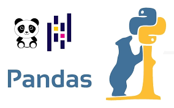

Nettoyage des données dans MySQL
J'ai travaillé sur un jeu de données des licenciements dans le secteur technologique depuis COVID 2019 jusqu'à 2023. En utilisant le langage SQL, je suis passée par la suppression des doublons, la standardisation des données, la gestion des valeurs nulles, la suppression des colonnes inutiles etc.
Analyse des résultats d'une enquête auprès de professionnels de données
Ce projet réalisé sur Power Bi regroupe l'analyse des salaires, des compétences techniques, des tendances sectorielles et l'analyse géographique des personnes travaillant dans le domaine des données. Je suis passée par le nettoyage des données et la création du tableau de bord.

Analyse des comportements d'achat pour une entreprise de vente de vélos
Le but de ce projet était de comprendre ce qui influence les achats en fonction des profils. Je suis passée par le nettoyage des données, la création et l'utilisation des tableaux croisés dynamiques, la réalisation du tableau de bord et l'utilisation des filtres dans Excel.
Analyse des annonces Airbnb et création de tableau de bord dans Tableau
J'ai utilisé Tableau et un jeu de données sur les annonces Airbnb aux Etats-unis en 2016 pour analyser quelques facteurs permettant de se lancer stratégiquement dans une entreprise Airbnb.

Extraction de données sur le site Amazon
J'ai utilisé Python dans Jupyter NoteBook pour extraire et analyser des données d'articles sur Amazon.

Netttoyage de données avec Pandas
J'ai utilsé un jeu de données recueillant des informations sur des personnes à contacter. Dans ce projet, je suis passée par la suppression des doublons, la standardisation des numéros de téléphone, la division des colonnes, la gestion des valeurs nulles ...